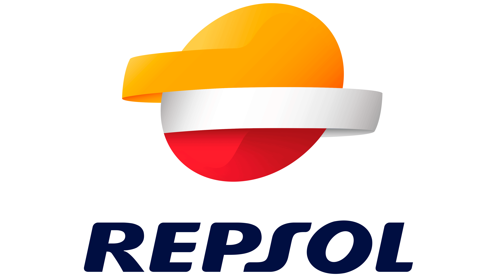
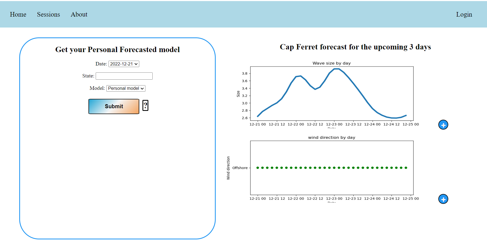
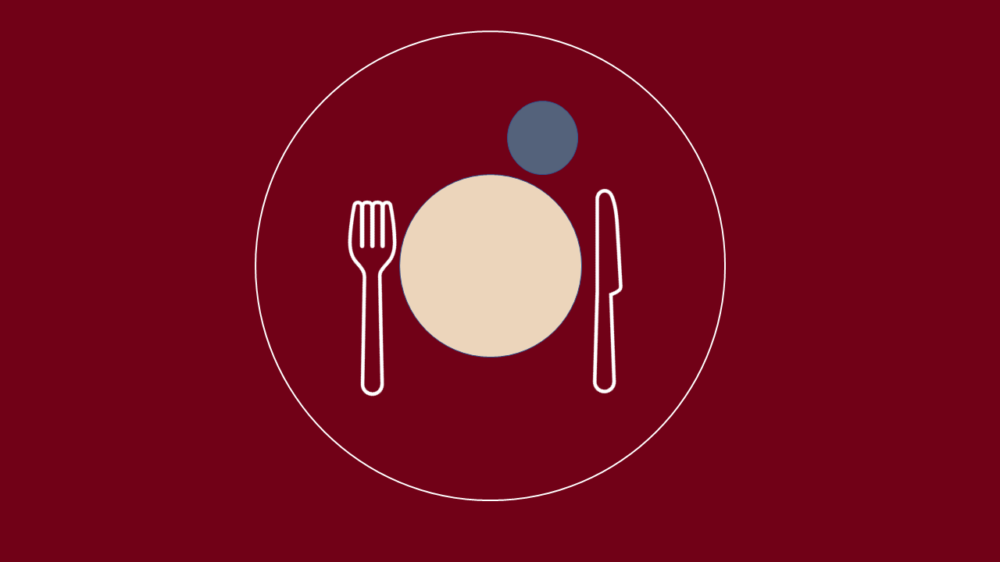

Maintaining and developping a luxury company ETL via Google cloud
The OLAP database had been migrated just 3 month before my integration.
Therefore one of my first task was to ensure the good processing of the ETL.
It included the extraction of the data source with the collaboration of the clients stakeholder (data formatting mainly)
Then the tranformation of the structured data through processes followed by different dags in airflow.
I could from there use the logs and with the help of the transformation files inspect the possible errors arising.
One example would be a window function that would wrongly select the second line of the collumn delivery date
without an error message it was nonetheless spotted with KPIs that we had many nulls Values.
I was also tasked with the development of the model, like adding new information into the model and ensuring their ETL.
Technologies used
Google cloud
- BigQuery
- DataStore
- Cloud storage
- DataFlow
Airflow
Bitbucket
Language used
Language spoken: Spanish, English
Project end date (mm/yy): 05/2022
Code not available for this project
Analysing, querying on the database and presenting analyses to key stakeholders
This project was executed in parallel of the first prject mentionned above (ETL) for a luxury company.
One responsability was stakeholder management: data simplification, prioritization of opportunity, scheduling,
definition of challenges and oppotunities. I would then write efficient query to the complex database.
On some ocasion the analyses had to be done in python due to the quantity of data analysed
Build comprehensive excel and afetr reviewal with the clients analyst, automate the queries or not.
A presentation as a further step was sometime Built abd presented to the clientsmarketing director and brand manager.
Technologies used
Google cloud
Metabase
Excel
Powerpoint
Language used
Language spoken: Spanish, English
Project end date (mm/yy): 05/2022
Code not available for this project
Developp a python package for File Transfer Protocol
Using a locally develloped software based on google cloud excels were generated for marketing puposes for a Telecom clients.
They were distributed to the appropriate platform (Like Slaesforce) on Filezilla and managed through Jira's tickets.
This distribution was automated using a python package taking into account the specificities of each campaigns:
where to dirstibute it, the brand, campaign specific filters.
Technologies used
Google cloud
Filezilla
Jira
Language used
Language spoken: Spanish
Project end date (mm/yy): 08/2022
Code not available for this project
Assess the data quality of a fashion business
Project under the supervision of the head data analyst in collaboration with the client's chief marketing officer.
Task included: data simplication, identification of analyses, data querying, dashboarding and presentation.
The analyses covered mainly: data filling, data formating, customers demographic with various filters.
Technologies used
Google cloud
Language used
Language spoken: French
Project end date (mm/yy): 07/2019
Sample query
Build a streaming data service for London's bike
Using London's bike public API we defigned an interactive map of the available bike stations.
This was done with real time data using producers, consumer and serving layers in the technologies below:
Technologies used
Kafka
PySpark
Mariadb
Language used
Language spoken: English
Project end date (mm/yy): 04/2021
Code
Forecast Repsol gas consumption in Spain
As part of a private data competition we built our foreacast as follwing and presented our finding to a Repsol board:
EDA: Extensive use of MatplotLib, data enrichment.
Feature engineering: Feature creation and additional dataset imports.
Preprocessing: Handling nulls with forward and backward filling, identify and drop unique values columns,
encode feature with oneHotEncoder and pd dumify, split the dataset by service station as an array of DataFrames,
standardize features with standard scaler.
Machine learning: Blocked time series split and Sarimax, Ridge and random forest
regressor optimized with GridSearch and feature importance for each station, plot
of the result.
Technologies used
GIT
Language used
Language spoken: English
Project end date (mm/yy): 05/2021

Code (without dataset)
Build an automated subscription app for Bombardier aeronautics
Assess the current subscription process and accordingly design DFD, use cases, data access layer, Ux designs.
The current problematics were mainly about data silos and human mistakes. To avoid those we automatised
and unified the subscription, customer management and billing process into a single application backed up
by a single database
Technologies used
Microsfot Visio
Microsfot Project
MySQL Workbench
Language used
Language spoken: English
Project end date (mm/yy): 12/2019
Code
Space Titanic Kaggle competition
Kaggle Machine learning competition: classification. The larger workload was feature engineering and preprocessing
Technologies used
Language used
Sate: finished
Code
Personal Wave forecaster
Get the foreacast of the next days waves in the southwest of France given the user preference.
The weather data is streamed from French meteo Copernicus API, it is then used in conjunction
with the user data to feed a saved machine learning model and the prediction served
as graph and tables.
Technologies used
MySQL Workbench
Xampp
MlFlow
Language used
- Python (ML model, API package and Django)
- Bash
- HTML
- CSS
- JavaScript
Sate: finished (local website)

Private repository
Efficient and key solution for missing customers in restaurants - Vite Ma Table
Solution for customers not coming to their table reservation based on last minute notification
we stopped the project in market research due to cold start challenges both on the customer
and restaurant sides (we both need a high number of restaurant and customer in a dense area)
Technologies used
Monday
Google Slide
Language used
Sate: stopped

Project
Integrated communication, file sharing and social application - Messageinf
First develloped as a C# project I later built it as a web project.
Integration of the multiple organisational professional software:
Scheduling, social interaction, file sharing. I first deployed it on AWS but later rolled back to local
Technologies used
AWS
- CodeBuild
- Code Pipeline
- Elastic Beanstalk
- Cloud Watch
- Dynamodb
- Draw.io (Ux, DFD)
- Language used
Sate: stopped
Project
Code
This CV
State: French version to be updated
Technologies used
Github pages
Language used
Sate: ongoing
code